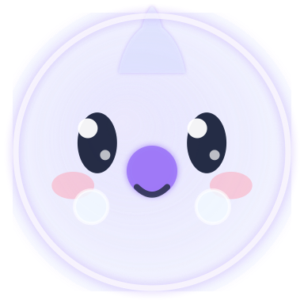

Coucou MASCOT STUDY / 02
Coucou MASCOT STUDY / 02Astral Morph · статичный вариант
Маленький дух.
Чистый характер.
Ледяное стекло, мягкий силуэт и два светящихся глаза. Один персонаж — от чёлки до большого блока в приложении.
Без ядраПрозрачный PNGМетки агента снаружи
IDLE / FRONT01 / Свёрнутая чёлка
26 px · мини-агенты 18 pxРаботаетНа своём месте.Силуэт помещается в чёлку целиком.
Claude CodeCodex02 / Раскрытый остров
64 px · агенты 22 px⌂ Обзор3 активных агента
Claude Code
ai_helper_adaptation
◌Изучает проект
Codex●Antigravity●Gemini●Объём сохраняется · лицо читается на чёрном
03 / Coucou Flow
96 px · навигация 20 pxСЕТЬ / ЗАЩИТА● Подключено
TunnelGuard
Соединение в порядке.
Можно работать спокойно.
Туннель активенСоединение проверено
Текущий рисунок → новый образ
Сравнение
СейчасИз текущего Swift-кода
Astral / 02Готовый статичный образ
Проверка масштаба
Натуральный размер в CSS px1824324864